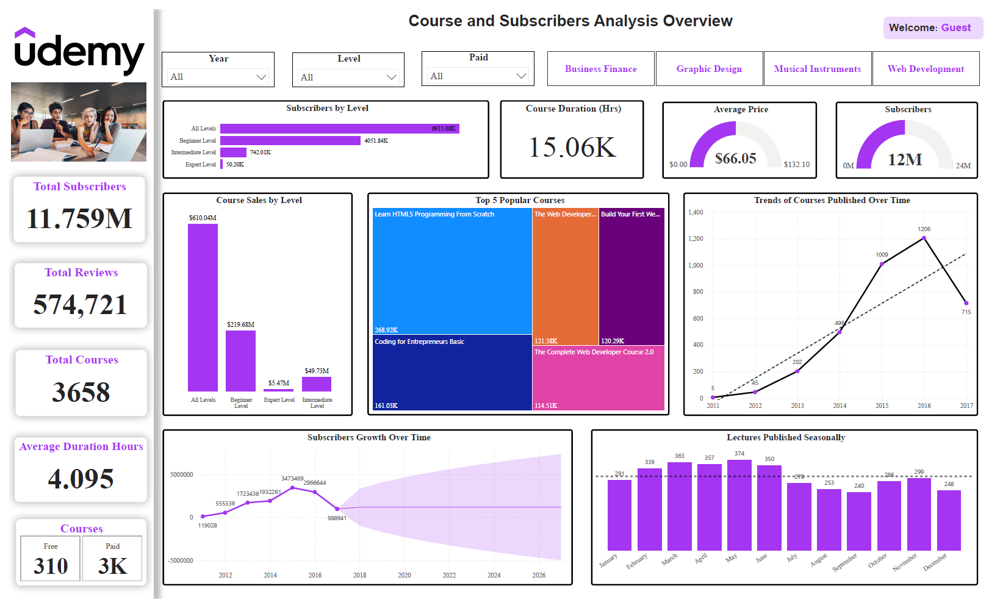
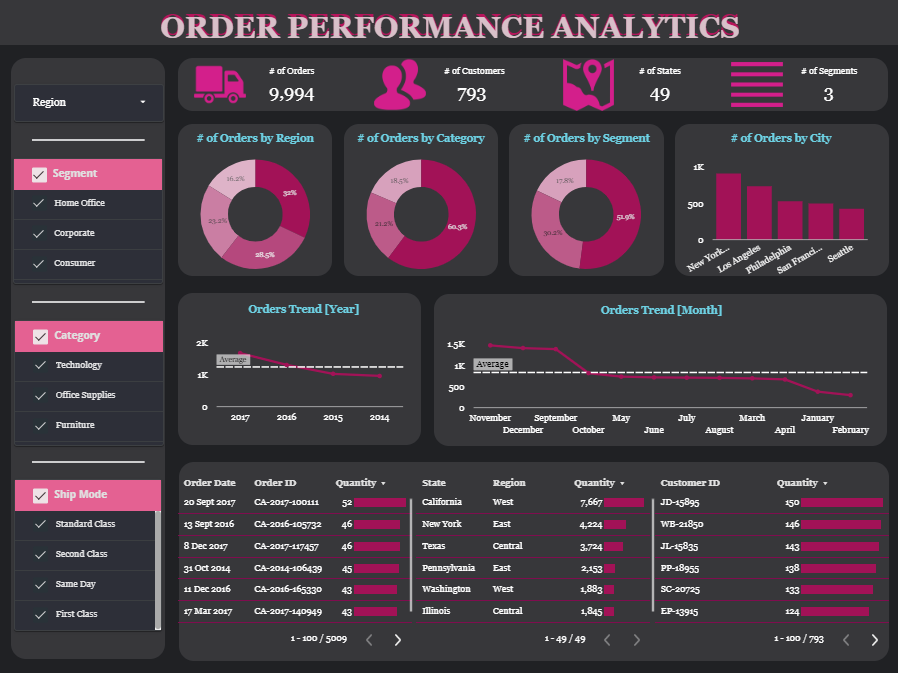
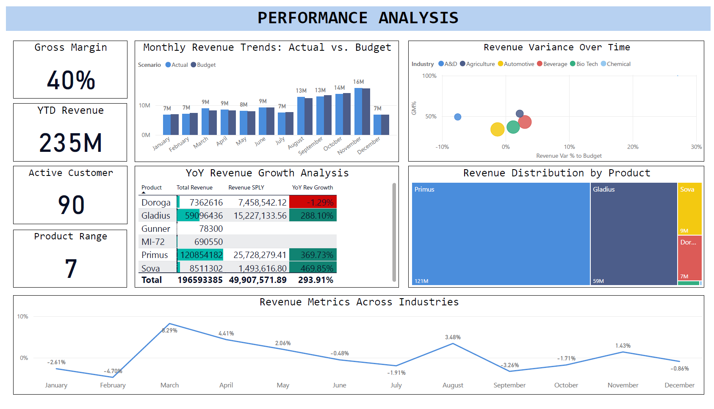
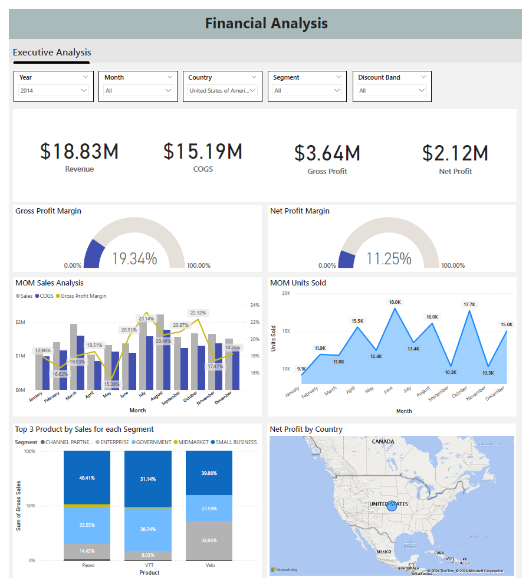
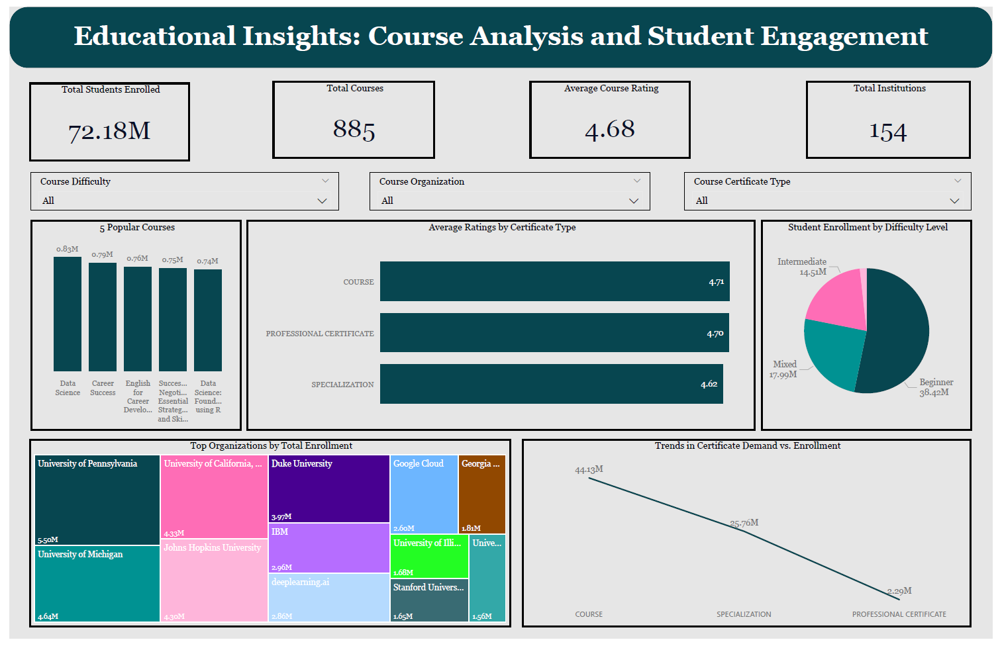

Developed an interactive dashboard to analyze Udemy course performance, subscriber trends, and revenue insights. Conducted exploratory data analysis (EDA) to uncover key patterns in course sales, subscription growth, and content popularity using data visualization techniques in Power BI.

This project utilized BeautifulSoup to scrape live data from a website, store the information in a CSV format. Performed data analysis with Pandas and created insightful visualizations using Matplotlib to reveal key insights like Revenue Growth, Employee Analysis, and Industry Performance.

Created an interactive Looker report with dynamic charts and key metrics to analyze order trends and performance. It includes donut charts for order distribution, bar charts for city-level breakdowns, and line charts for yearly and monthly trends. User-friendly filters and KPI cards help uncover actionable insights, optimize decisions, and enhance sales strategies—ideal for businesses seeking operational efficiency and growth.
This project transforms raw sales data into actionable insights using Power BI. From country-level performance to category profitability and regional trends, the dashboard uncovers critical metrics to drive informed decision-making and optimize business strategies.

Developed an interactive Power BI dashboard for the manufacturing and sales domain to provide an overview of key business performance metrics, including revenue trends, product growth, and industry-specific insights.

This project analyzes revenue, costs, and profitability trends using Power BI, offering insights into sales performance, profit margins, and top-performing products across segments and regions.

This dashboard aids decision-making by providing insights into student enrollment trends, course popularity, and certification demand. It helps identify high-engagement courses, optimize content for beginner learners, and highlight growth opportunities for specialization and professional certificates. Additionally, it reveals top-performing institutions, guiding strategic partnerships and marketing efforts to maximize enrollment and course impact.